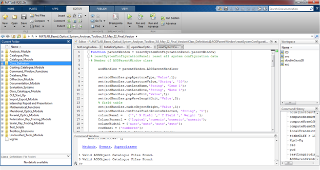

For MATLAB 2012b or latest users, the toolbox is deployed as a MATLAB app, which is a single file that can be installed to App gallery of MATLAB. All issues regarding the path and working directory are handled automatically. So to start using the toolbox,
Note: All the source files and the different modules of the toolbox can be seen by browsing through the folder where the App is installed.
For users of earlier versions of MATLAB, the toolbox folder shall be copied to the destination computer. And then the toolbox can be used from either from the GUI or the command window as follows.
This user manual is used for the GUI based operation of the toolbox. The command based operation will be included in the future.
Note: As the toolbox uses 'pwd' commands to get the toolbox directory, it is must to make the toolbox folder current working folder otherwise some features may fail. Your current directory should be as shown below

Created with the Personal Edition of HelpNDoc: Free HTML Help documentation generator